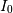
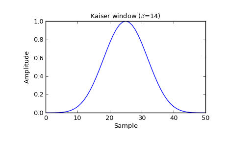
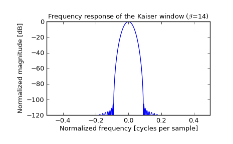

scipy.signal.kaiser¶
- scipy.signal.kaiser(M, beta, sym=True)[source]¶
Return a Kaiser window.
The Kaiser window is a taper formed by using a Bessel function.
Parameters : M : int
Number of points in the output window. If zero or less, an empty array is returned.
beta : float
Shape parameter, determines trade-off between main-lobe width and side lobe level. As beta gets large, the window narrows.
sym : bool, optional
When True (default), generates a symmetric window, for use in filter design. When False, generates a periodic window, for use in spectral analysis.
Returns : w : ndarray
The window, with the maximum value normalized to 1 (though the value 1 does not appear if the number of samples is even and sym is True).
Notes
The Kaiser window is defined as

with

where  is the modified zeroth-order Bessel function.
The Kaiser was named for Jim Kaiser, who discovered a simple approximation to the DPSS window based on Bessel functions. The Kaiser window is a very good approximation to the Digital Prolate Spheroidal Sequence, or Slepian window, which is the transform which maximizes the energy in the main lobe of the window relative to total energy.
The Kaiser can approximate many other windows by varying the beta parameter.
beta Window shape 0 Rectangular 5 Similar to a Hamming 6 Similar to a Hann 8.6 Similar to a Blackman A beta value of 14 is probably a good starting point. Note that as beta gets large, the window narrows, and so the number of samples needs to be large enough to sample the increasingly narrow spike, otherwise NaNs will get returned.
Most references to the Kaiser window come from the signal processing literature, where it is used as one of many windowing functions for smoothing values. It is also known as an apodization (which means “removing the foot”, i.e. smoothing discontinuities at the beginning and end of the sampled signal) or tapering function.
References
[R126] J. F. Kaiser, “Digital Filters” - Ch 7 in “Systems analysis by digital computer”, Editors: F.F. Kuo and J.F. Kaiser, p 218-285. John Wiley and Sons, New York, (1966). [R127] E.R. Kanasewich, “Time Sequence Analysis in Geophysics”, The University of Alberta Press, 1975, pp. 177-178. [R128] Wikipedia, “Window function”, http://en.wikipedia.org/wiki/Window_function Examples
Plot the window and its frequency response:
>>> from scipy import signal >>> from scipy.fftpack import fft, fftshift >>> import matplotlib.pyplot as plt
>>> window = signal.kaiser(51, beta=14) >>> plt.plot(window) >>> plt.title(r"Kaiser window ($\beta$=14)") >>> plt.ylabel("Amplitude") >>> plt.xlabel("Sample")
>>> plt.figure() >>> A = fft(window, 2048) / (len(window)/2.0) >>> freq = np.linspace(-0.5, 0.5, len(A)) >>> response = 20 * np.log10(np.abs(fftshift(A / abs(A).max()))) >>> plt.plot(freq, response) >>> plt.axis([-0.5, 0.5, -120, 0]) >>> plt.title(r"Frequency response of the Kaiser window ($\beta$=14)") >>> plt.ylabel("Normalized magnitude [dB]") >>> plt.xlabel("Normalized frequency [cycles per sample]")
